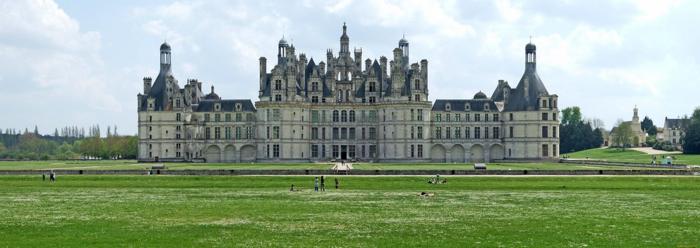
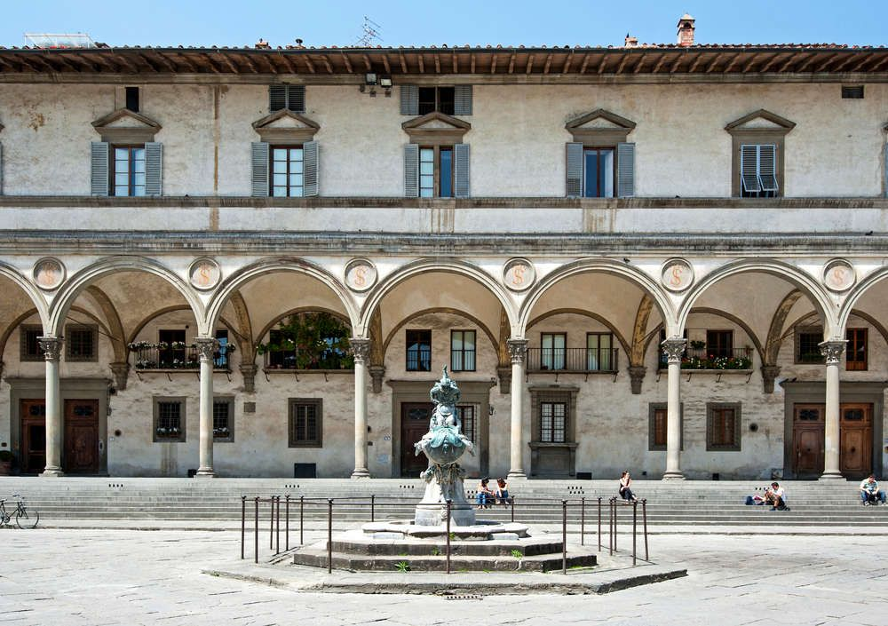
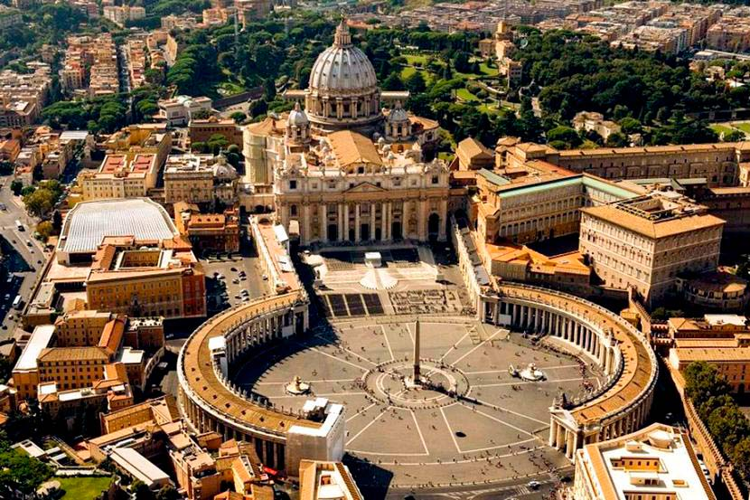

Эпоха Возрождения пришла на смену готике в начале 15 века и доминировала вплоть до начала 17 века. Эпоха стала символом возрождения интереса к ценностям Древнего Рима и Древней Греции. Симметрия, логика и гармония стали главными элементами для архитектурного стиля. Кроме того, именно в это время строительство и архитектура перестали быть анонимными. Появляются известные архитекторы, со своими собственными стилями и узнаваемыми чертами.
Строения эпохи Возрождения отличаются от готических своей жизненностью, уютом, они надежно стоят на земле, имеют правильные и приятные глазу очертания, простые правильные геометрические формы, четкую этажность.
Влияние античности отражено в использовании ордерной системы и всевозможных видов колонн. Постройки Ренессанса симметричны, имеют приятный жизнеутверждающий цвет фасадов, украшены лепниной, заштукатурены.

Особенности архитектуры Возрождения
Эпоха Возрождения стала своеобразным отсылом к классической римской архитектуре. Вернулись в строительство следующие черты:
- Симметрия
- Пропорции
- Доминация прямоугольных форм для зданий различного назначения
- Важность декоративного убранства
- Использование облегченной конструктивной системы
Воспитательный дом во Флоренции:

Яркий пример воплощения архитектуры Возрождения в Италии — Воспитательный дом во Флоренции. Он принадлежит гению Филиппо Брунеллески, давшему начало перспективе, как изобразительному приему.
Двухэтажный дом предстает перед зрителем в виде долгой аркады, приподнятой от земли некоторым количеством ступеней. Здание расположено на площади, горизонтально вытянуто (готические постройки, в свою очередь, стремились исключительно вверх), но при этом не создает ощущение излишества, потому что размер постройки соотносится с площадью, уравновешивая ее.
Изящные колонны, тонкие своды арок, ряд прямоугольных окон - в фасаде сквозит легкость, несмотря на действительную массивность конструкции. Если первый этаж богато декорирован, то второй представляет собой скромно оштукатуренную стену. Это здание вбирает в себя отличительные черты архитектуры Возрождения: конструктивную ясность, античную простоту, гармоничность.
Собор Святого Петра в Ватикане:

Собор Святого Петра в Ватикане — еще один образчик архитектуры Ренессанса. Над его сооружением трудились Донато Браманте, а затем и Рафаэль Санти и Микеланджело. Кстати, именно перу последнего принадлежит идея создания самого величественного купола в мире — он поднят на высоту 136 метров.
Невероятно богат собор убранством, снаружи украшают его скульптуры и статуи, двери сами по себе — предмет искусства, мраморные барельефы, а внутри все настолько богато и щедро декорировано, что невозможно остановиться на отдельном элементе. Гармония, роскошь, красота — все это можно сказать о внутреннем устройстве собора.
Эпоха Возрождения дала миру архитектуры многое: как принципы, по которым строят до сих пор, так и великих мастеров своего дела, чьи имена навсегда вошли в историю и чьи строения продолжают радовать нас сегодня, более 4-ех веков спустя.
Другие выдающиеся памятники архитектуры: